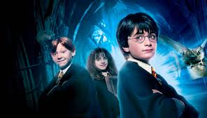
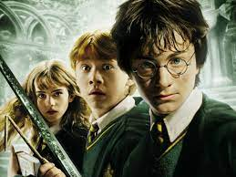
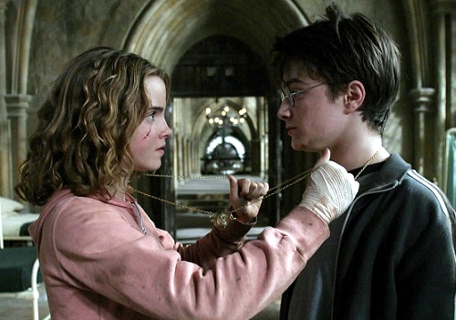
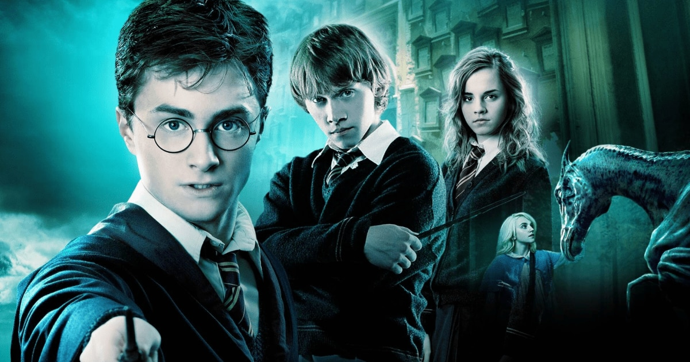
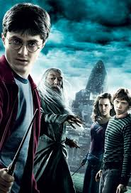
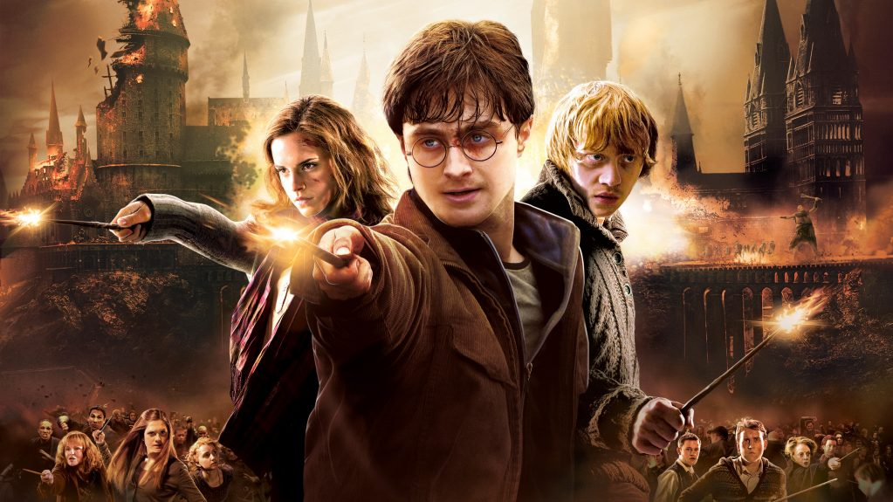

Filmes
-

Harry Potter e a Pedra Filosofal
Harry Potter é um garoto órfão que vive infeliz com seus tios, os Dursleys. Ele recebe uma carta contendo um convite para ingressar em Hogwarts, uma famosa escola especializada em formar jovens bruxos. Inicialmente, Harry é impedido de ler a carta por seu tio, mas logo recebe a visita de Hagrid, o guarda-caça de Hogwarts, que chega para levá-lo até a escola. Harry adentra um mundo mágico que jamais imaginara, vivendo diversas aventuras com seus novos amigos, Rony Weasley e Hermione Granger.
-

Harry Potter e a Camara Secreta
Após as sofríveis férias na casa dos tios, Harry Potter se prepara para voltar a Hogwarts e começar seu segundo ano na escola de bruxos. Na véspera do início das aulas, a estranha criatura Dobby aparece em seu quarto e o avisa de que voltar é um erro e que algo muito ruim pode acontecer se Harry insistir em continuar os estudos de bruxaria. O garoto, no entanto, está disposto a correr o risco e se livrar do lar problemático.
-

Harry Potter e o Prisioneiro de Azkaban
É o início do terceiro ano na escola de bruxaria Hogwarts. Harry, Ron e Hermione têm muito o que aprender. Mas uma ameaça ronda a escola e ela se chama Sirius Black. Após doze anos encarcerado na prisão de Azkaban, ele consegue escapar e volta para vingar seu mestre, Lord Voldemort. Para piorar, os Dementores, guardas supostamente enviados para proteger Hogwarts e seguir os passos de Black, parecem ser ameaças ainda mais perigosas.
-

Harry Potter e o Calice de Fogo
Harry retorna para seu quarto ano na Escola de Magia e Bruxaria de Hogwarts, junto com os seus amigos Ron e Hermione. Desta vez, acontece um torneio entre as três maiores escola de magia, com um participante selecionado de cada escola, pelo Cálice de Fogo. O nome de Harry aparece, mesmo não tendo se inscrito, e ele precisa competir.
-

Harry Potter e a Ordem da Fênix
Após um verão desastroso, Harry volta para o seu quinto ano em Hogwarts, um dos mais difíceis que terá de encarar. Pouquíssimos alunos e pais acreditam nele ou em Dumbledore sobre a volta de Voldemort, e uma série interminável de artigos circula dizendo que eles estão completamente malucos. Ainda por cima, Dolores Umbridge, a nova professora de Defesa Contra as Artes das Trevas, prova ser a pessoa mais repugnante que Harry já conheceu.
-

Harry Potter e o Enigma do Principe
No sexto ano de Harry em Hogwarts, Lord Voldemort e seus Comensais da Morte estão criando o terror nos mundos bruxo e trouxa. Dumbledore convence seu velho amigo Horácio Slughorn para retornar a Hogwarts como professor de poções após Harry encontrar um estranho livro escolar. Draco Malfoy se esforça para realizar uma ação destinada por Voldemort, enquanto Dumbledore e Harry secretamente trabalham juntos a fim de descobrir o método para destruir o Lorde das Trevas uma vez por todas.
-
Harry Potter e as Relíquias da Morte: Parte 1
Sem a orientação e proteção de seus professores, Harry, Rony e Hermione iniciam uma missão para destruir as horcruxes, que são as fontes da imortalidade de Voldemort. Embora devam confiar um no outro mais do que nunca, forças das trevas ameaçam separá-los. Os Comensais da Morte de Voldemort tomaram o controle do Ministério da Magia e de Hogwarts, e eles estão procurando por Harry enquanto ele e seus amigos se preparam para o confronto final.
-

Harry Potter e as Relíquias da Morte: Parte 2
A batalha entre as forças do bem e do mal da magia alcançam o mundo dos trouxas. O risco nunca foi tão grande, e ninguém está seguro. Harry Potter precisa fazer um sacrifício final conforme o confronto com Lord Voldemort se aproxima.